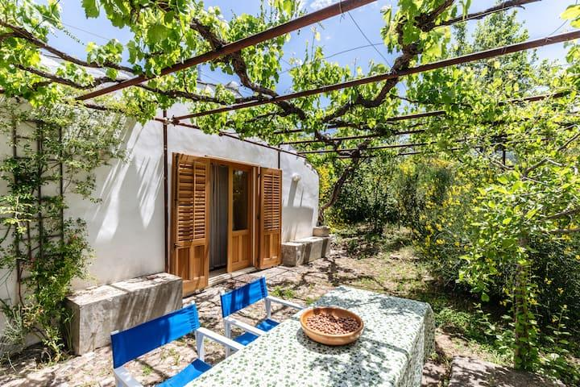
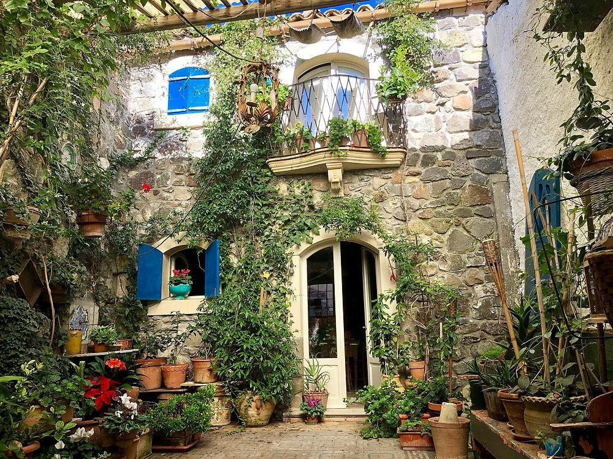
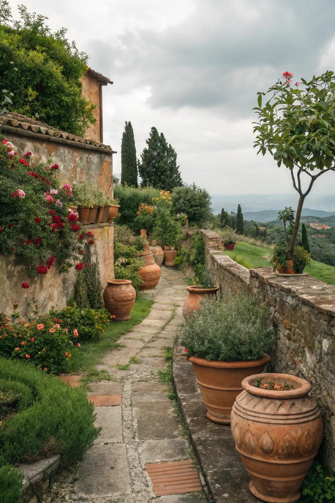
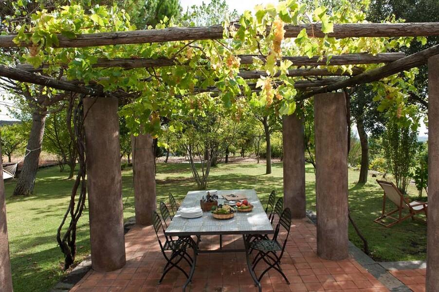
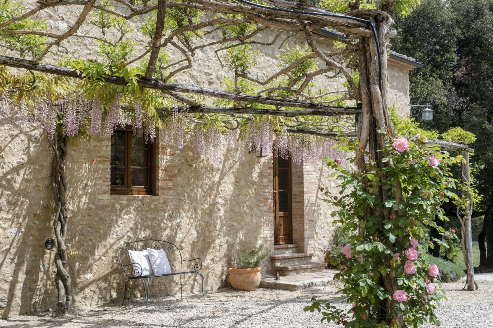
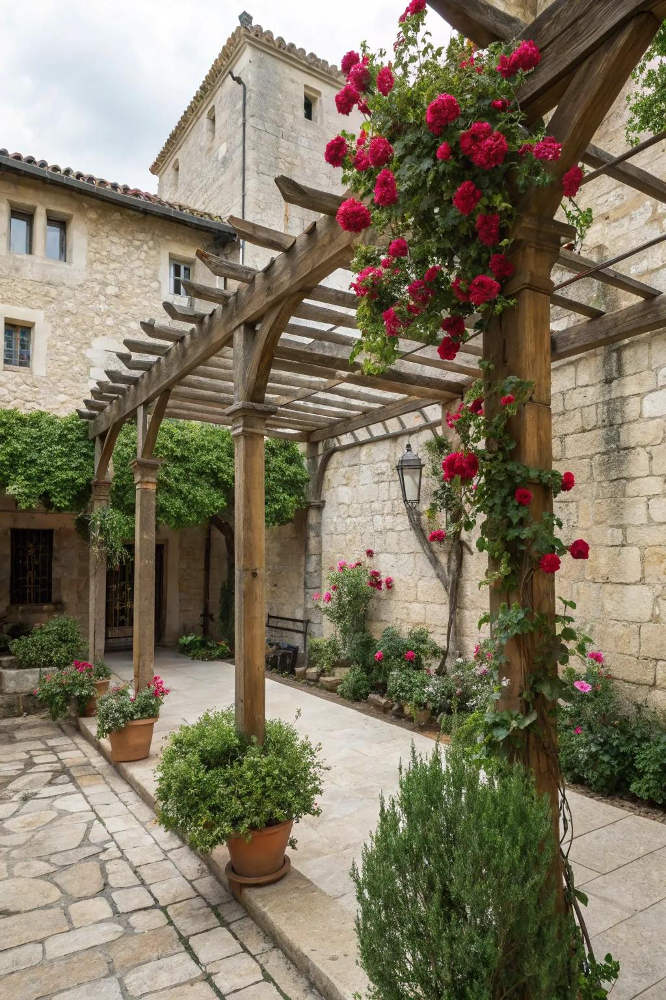
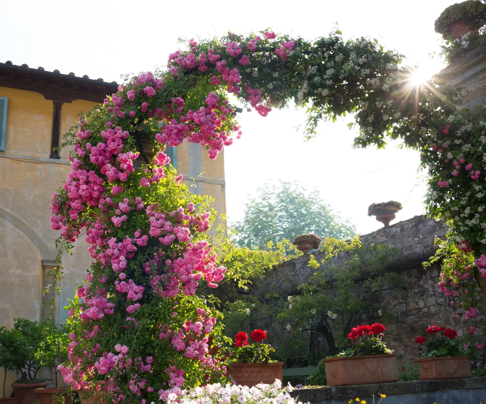
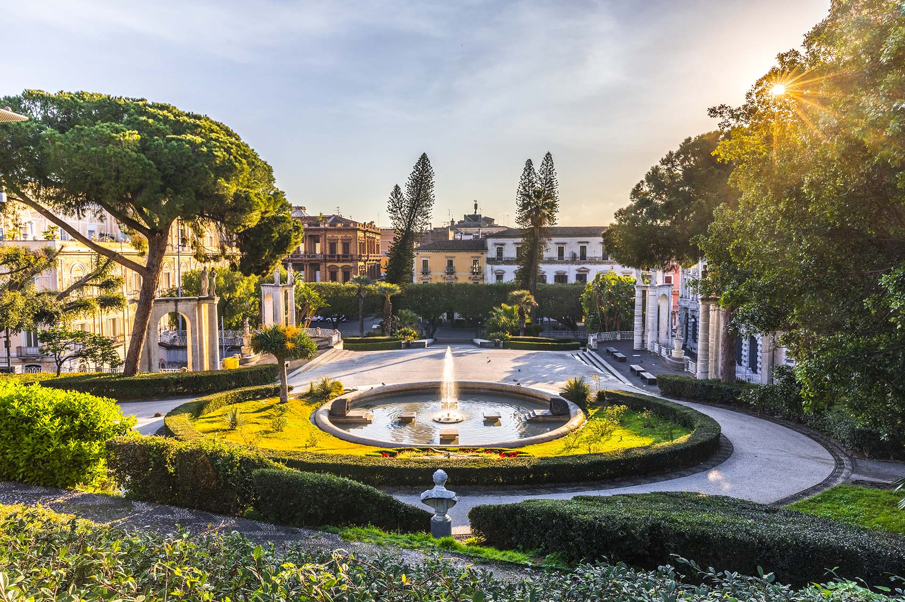
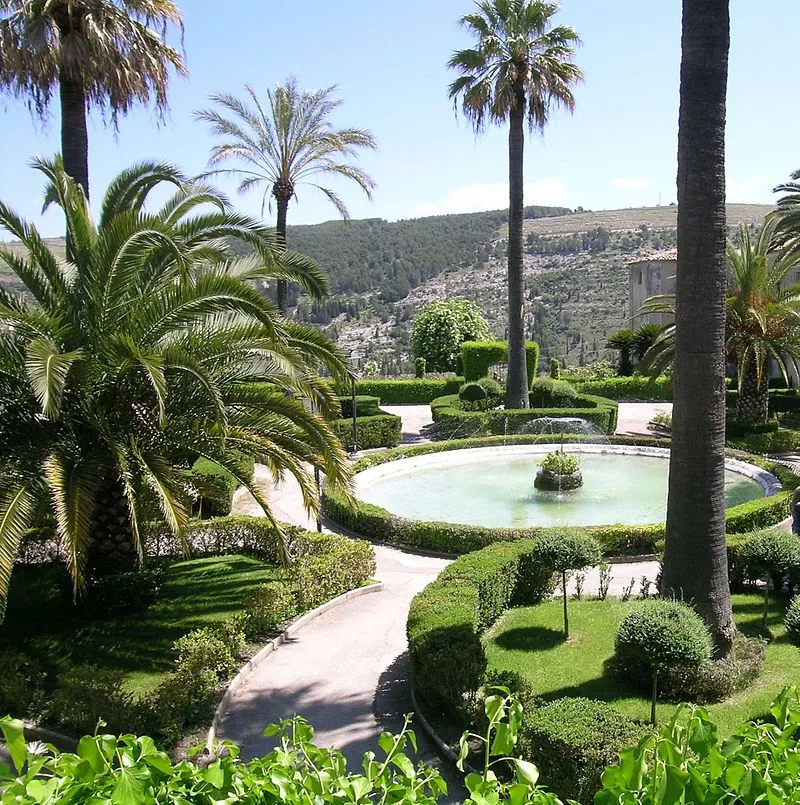

Sicillian Garden Design

Sicilian Garden Design
Sicilian gardens reflect the island's Mediterranean climate, its long history of Greek, Roman, Arab, Spanish and Italian influence, and its close relationship with architecture. Unlike the expansive formal gardens associated with some Italian villas, the Sicilian garden often feels **intimate, enclosed and deeply connected to the home**. Stone walls, courtyards, citrus trees, terracotta vessels, fountains, pergolas and climbing vines create cool, sheltered spaces in an otherwise hot and sunny landscape. The garden is frequently designed as an extension of the house—a place for **dining, conversation, shade, fragrance and relaxation**.
Courtyard Gardens

The courtyard is perhaps the most characteristic element of the Sicilian garden. Surrounded by walls or buildings, the courtyard creates a protected garden room where plants can be grown in conditions warmer and more sheltered than the surrounding landscape. Terracotta pots are an essential component. Large vessels can contain citrus trees, olives, herbs and flowering plants, while smaller pots can be grouped along steps, walls and entrances. The arrangement does not need to be perfectly symmetrical. Instead, Sicilian courtyards often have a collected, lived-in quality, with plants at different heights and ages.
Terracotta Pots

Terracotta introduces the warm colours of the Mediterranean landscape—burnt orange, ochre, sand and reddish brown. Large terracotta vessels can be used as architectural focal points, particularly when positioned at the entrance to a courtyard, beside a staircase or on either side of a doorway. Containers also offer a practical advantage in an Okanagan adaptation: plants that are not reliably winter-hardy can be grown in pots and moved to a protected location during the coldest months.
Climbing Vines
Climbing plants soften the hard surfaces of courtyard walls and buildings. They can climb trellises, pergolas, walls and columns, creating shade and transforming architecture into part of the garden. The combination of **old stone, terracotta and luxuriant vines** creates the characteristic romantic quality of a Sicilian courtyard.
Pergolas

Pergolas provide one of the most effective ways of introducing shade and vertical planting into a Mediterranean-style garden. Rather than simply being an architectural structure, the pergola becomes a living canopy as vines grow across its framework. The resulting filtered shade creates a comfortable outdoor room for dining, entertaining or resting. A pergola can also create a transition between different areas of the garden—for example, connecting the house with a courtyard, herb garden or outdoor dining area.
Wisteria

Wisteria is particularly dramatic when trained over a pergola. Its long, cascading flower clusters create a romantic overhead canopy, while the mature woody stems contribute an impression of age and permanence. Its vigorous growth makes it especially effective for covering substantial structures, although it requires a strong support system and regular management.
Climbing Roses

Climbing roses provide another classic Mediterranean garden element. Their flowers can be trained over pergolas, arches and walls, combining colour and fragrance with the architectural structure of the garden. They are particularly effective when combined with stone and terracotta, where the softness of the flowers contrasts with the hard materials. For an Okanagan garden, **hardy climbing roses** can be selected to provide the same romantic effect while tolerating the local winter climate.
The Character of the Sicilian Garden

The Sicilian garden is less about creating an enormous formal composition and more about creating beautiful, sheltered spaces for living. Its characteristic elements include: Courtyards — intimate enclosed garden rooms Terracotta — warmth and Mediterranean character Vines — shade, softness and vertical interest Pergolas — architectural shade structures Wisteria — dramatic flowering canopies Climbing roses — fragrance and romance Stone walls — permanence and texture Containers — flexibility and architectural accents Herbs and citrus — fragrance and usefulness Water — cooling sound and atmosphere For the Okanagan, the Sicilian style offers an especially useful lesson: work with microclimates. A south-facing courtyard, protected wall or enclosed patio can create a warmer environment where Mediterranean-inspired planting is more successful, while containers allow tender plants to be protected through winter. The result is a garden that feels warm, intimate, fragrant and relaxed—an outdoor room rather than simply a collection of plants.
Giardino Bellini

A public garden that dates back to 1854 when it was purchased by the Comune di Catana. It then has a maze, a labrynth and housed many animals within its enclosure; swans, deer, cows, an aviary, geese and monkeys. Large Palms tower over neatly trimmed hedges, water fountains on lawns of green. It is the oldest urban park in the region.
Giardino Ibleo

A 19th century garden located in the oldest parts of Ragusa, a historical gardens of the city. There are 16,000 sq meters over looking a valley below, with the river Contrada Arancelli. The oldest part of the gardens has ruins of the San Giorgio Church, the Capuchin Convent and the San Domenico Convent. With all the vegetation of Mediterranean origin, pink flowers and Judas Trees, the geometrically hsaped flower beds and central knool with a rotunda give this a classic Sicillian garden design.